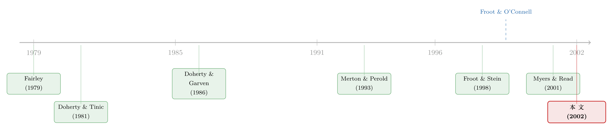

蝗灾不算系统性风险，凭什么卖得这么贵？
本文读的是 Zanjani (2002, Journal of Financial Economics)：当消费者在乎保险公司会不会赔得起、而资本又是有成本的，竞争性的保费就会对「威胁公司偿付能力」的风险收取溢价——哪怕这种风险和资本市场毫不相关。巨灾保险贵得离谱，并非因为它和大盘同涨同跌，而是因为它在边际上吃掉了太多资本。
1 一个让 CAPM 下不来台的谜
先说一个让人挠头的事实。
巨灾再保险（catastrophe reinsurance）的价格，长期高得离谱——Froot (1999)、Froot 和 O'Connell (1999) 都发现，市场价远远超过其预期损失（expected loss）。可问题在于：飓风、地震这类巨灾风险，几乎和金融资产的回报【毫不相关】，而且相对于整个资本市场来说，它小得可以忽略不计。
按照我们熟悉的那套资本资产定价模型 (capital asset pricing model, CAPM) 的逻辑，一个和市场组合零相关、又能被充分分散掉的风险，是不该索取任何风险溢价的。投资者大可以把它装进一个全球分散的组合里，让它悄无声息地相互抵消。
那么，为什么巨灾保险还是这么贵？
这正是 Zanjani 这篇论文要回答的问题。而它给出的答案，妙就妙在：它没有去修补 CAPM，也没有诉诸什么"投资者非理性"或"市场不完善"，而是退回到一个更朴素、却被资产定价文献长期忽略的事实——保险公司是有限责任公司，它持有的资本是有成本的，而买保险的人，真的在乎这家公司将来赔不赔得起。 把这三件事放进同一个模型，巨灾保险的高价就不再是个谜，反而成了竞争均衡下的必然。
（关于巨灾风险能否被打包卖给资本市场、以及随之而来的基差风险，可参见《蝗灾买不到保险，却可以「打包卖给华尔街」——但你敢买吗？》。）
2 先把"质量"这个词钉死
要讲清这套逻辑，第一步是把一个含糊的词——保险的"质量"——变成可以写进效用函数的东西。
在这个模型里，一份保单的质量 (quality) 不是指条款写得多漂亮，而是指这家公司真能履约的能力，也就是它的偿付能力 (solvency)。消费者的效用 \(U(p_i, q_i)\) 同时取决于价格 \(p_i\) 和质量 \(q_i\)：价格越低越好，质量越高越好。第 \(i\) 类市场的需求 \(y_i(p_i, q)\) 对价格递减、对质量递增。
接着，一个自然的问题是：质量从哪里来？答案是盈余 (surplus)——公司在为预期负债留足准备金之后，额外持有的那一笔金融资产，本质上是替保单持有人备下的抵押品。盈余的定义是：
$$S = R + \sum_i p_i y_i - c(y_1,\dots,y_N) - \sum_i m_i y_i - \gamma$$
其中 \(R\) 是股东投入的初始资本，\(c(\cdot)\) 是前端生产成本，\(m_i\) 是第 \(i\) 类市场每单位需求的预期折现赔付，\(\gamma\) 是赔付之前就支付给股东的固定分配。说白了，盈余就是"资产减去该赔的，再减去该分给股东的"之后，剩下那一层安全垫。
有了盈余，违约就可以被精确地写出来。如果期末提交的总索赔 \(L\) 超过了公司的资产，公司只赔到资产为止，那笔赔不出的缺口是一个随机变量：
$$D = \max[0,\; L - E[L] - S(1+r_f)]$$
\(D\) 的分布，决定了这份保单的质量。盈余越厚，违约越不可能、即便违约也越轻——所以质量 \(q(S, y_1,\dots,y_N)\) 对盈余递增。这一步是整篇文章的枢纽：质量被牢牢地锚定在了公司自己的资产负债表上。 一份保单值不值钱，不取决于它自己，而取决于整家公司的家底够不够厚。
注意这里一个容易被忽略的细节：质量是按"整家公司"来定的，而不是按单张保单。同一家公司里所有的保单持有人，都是同一堆资产的潜在索赔人——用作者的话说，大家都"在同一条船上"。这个"同舟共济"的设定，是后面所有结论的根。
3 模型：当"省资本"逼出了"怕风险"
现在把成本放进来，让公司去最大化利润。
设 \(d\) 为持有资本的折现成本——它等于保险股本要求的回报率，减去公司把这笔钱投出去（按无风险利率 \(r_f\)）拿到的回报，再针对税收和其他摩擦成本做调整。那么公司的预期折现利润是：
$$\sum_i p_i y_i - c(y_1,\dots,y_N) - \sum_i m_i y_i + \frac{E[D]}{1+r_f} - dR$$
这个式子里藏着一对相互拉扯的力量，值得逐项看。\(E[D]/(1+r_f)\) 这一项是个正号——违约其实替公司"省"下了一笔本该赔出去的钱，风险越大，这笔省下的越多。光看这一项，公司应该巴不得多冒险、把风险一股脑塞给消费者。但 \(-dR\) 这一项告诉你：要让消费者放心（即提高质量），就得多持有资本 \(R\)，而每一块钱资本都要付出成本 \(d\)。
于是公司面对一个成本—质量的权衡 (cost–quality trade-off)：
- 多持资本 → 质量上升 → 需求和愿意支付的价格上升，但持有成本也上升；
- 少持资本 → 省了成本，但质量下降、生意流失。
真正关键的一步在于：公司还有第三条路——通过风险管理和分散化来"省"资本。如果公司能把自己投资组合的风险降下来，它就能在不牺牲质量的前提下少持资本、降低成本。
这就逼出了一个反直觉的结论：即便股东本身充分分散、对这点保险风险毫不在意，公司在经营层面也会表现得"厌恶风险"。 它会主动躲开那些会推高资本需求的业务，并对不得不承接的风险收费。而某个细分市场的风险收费，恰恰等于这个市场对应的边际资本需求 (marginal capital requirement)——也就是为维持公司偿付能力、在该业务边际扩张时所需追加的资本。
各市场之间的价差，就此被归结为一件事：边际资本需求的差异。
把这个权衡写成对资本 \(R\) 的最优性条件，能看得更清楚：
$$-d + \frac{d\,E[D]}{(1+r_f)\,dR} + \sum_j \left(p_j - m_j - \frac{\partial c}{\partial y_j}\right)\frac{\partial y_j}{\partial q}\frac{dq}{dR} \ge 0$$
第一项 \(-d\) 是资本的边际成本；中间一项是多持资本带来的违约节省的减少；最后一项是资本通过抬高质量、进而拉动需求所带来的收益。三者的平衡点，就是公司选定的资本水平。
考虑两个极端，直觉会一下子清楚起来：
极端一：消费者根本不在乎质量（比如担保基金 (guaranty fund) 提供了完全保护，\(\partial y_i/\partial q = 0\)）。此时持有资本的好处消失了，公司一分钱资本都不持有，把所有违约风险甩给消费者。更耐人寻味的是，此时风险反而被奖励——边际违约贡献越高的市场，价格越低。逻辑很简单：违约能省钱，省下的钱当然要让利揽客。
极端二：消费者在乎质量，但持有资本没有成本（\(d=0\)）。公司会持有足够多的资本来彻底排除违约，于是违约不再是个问题，标准的垄断定价规则回归，价格与风险无关——风险被无成本地转嫁给了投资者。
而一般情形夹在两者之间：消费者在乎质量，资本又有成本。公司于是扮演一个中介 (intermediary)，把风险负担在消费者和投资者之间切分，并让保费反映各业务对违约风险的边际贡献。这，就是巨灾保险高价的微观基础。
4 那个长得像 CAPM、其实完全不是的公式
模型推到这里，作者做了一个聪明的特例：假设各类索赔服从正态分布。这一步既能给出闭式解，又能把竞争性定价当作"垄断定价在需求无限弹性时的极限"来研究。
设第 \(i\) 类的平均索赔 \(a_i\) 服从均值 \(m_i\)、方差 \(\sigma_{ii}\) 的正态分布，第 \(i\)、\(j\) 类平均索赔的协方差为 \(\sigma_{ij}\)。保险公司总索赔的方差是：
$$\sigma = \sum_i\sum_j y_i y_j \sigma_{ij} + \sum_i y_i \rho$$
第一项是总量不确定性 (aggregate uncertainty) 的贡献——整个投保群体的平均成本本身就是随机的；第二项是过程风险 (process risk)——即便群体均值已知，公司这一篮子保单的实际平均也会因偶然而偏离。对巨灾而言，要命的恰恰是第一项：一场飓风让所有保单同时出险，分散化根本帮不上忙。
在公司足够大、可以忽略过程风险（\(\rho/2\sum_j y_j \approx 0\)）时，定价关系化为：
$$\left(p_i\Big(1+\tfrac{1}{e_i}\Big) - m_i - c'\right) = \beta_i \sum_j s_j\left(p_j\Big(1+\tfrac{1}{e_j}\Big) - m_j - c'\right)$$
其中 \(e_i\) 是第 \(i\) 类市场的需求价格弹性，\(s_i = y_i/\sum_j y_j\) 是其在公司组合中的份额，而 \(\beta_i \equiv \mathrm{cov}_{i,z}/\mathrm{var}_z\)——第 \(i\) 类的总量风险成分与公司整个组合总量风险成分的协方差，除以后者的方差。
让市场趋于完全竞争（所有 \(e_i \to \infty\)），就得到全文最漂亮的那一行：
其中 \(p^* = \sum_j s_j p_j\)，\(m^* = \sum_j s_j m_j\)。
乍一看，这简直就是 CAPM 的翻版：某个市场的"加成"等于一个 beta 乘以平均加成。但真正关键的反转在于这个 beta 是什么——它衡量的是第 \(i\) 类风险与【本公司投资组合】的协动，而不是与整个证券市场的协动。
这一字之差，天壤之别。在这个例子里，保险市场的不确定性和资本市场回报【完全独立】，可保费里照样有风险溢价——只因为消费者在乎偿付能力。保险业的制度细节（有限责任公司 + 有成本的资本）让"均衡资产定价模型"那套逻辑在保险上彻底失灵。
更有意思的是，这个 beta 是公司特定 (firm-specific) 的。既然质量由公司自身的偿付能力决定，定价相关的 beta 就反映这家公司自己那一篮子风险。不同公司持有不同的客户组合（现实中确实如此——很多公司按地区或险种专业化经营），于是同一个消费者在不同公司那里，"公允价"和加成都不一样。一笔对甲公司是"火上浇油"的巨灾敞口，对一家从未涉足该地区的乙公司可能无足轻重。
5 把资本成本拆回每一份保单
公式 (14) 说明竞争性保险公司也会有随市场而异的加成。但还有一个会计上的问题没解决：这些加成，能不能干净地拆解成标准的生产成本？
公允定价意味着平均价格等于平均成本：
$$p^* = \frac{c(y_1,\dots,y_N) + \sum_i m_i y_i - E[D]/(1+r_f) + dR}{\sum_i y_i}$$
分子里四块成本——生产成本、预期损失、违约节省（负项）、资本成本——前两块好分摊到各市场，后两块（资本成本与违约节省）却没那么显然。一个市场的竞争性保费里显然该含一块资本成本，可它到底是多少？
作者借助"维持固定质量所需的盈余"这一隐函数 \(\hat{S}\)，导出了第 \(i\) 类市场的真实边际成本，并在正态分布的竞争特例下（假设质量是违约概率的一一映射、零股东分配、线性生产成本、零利润），把它写成漂亮的三段：
$$c' + m_i - \frac{\beta_i\, E[D]/(1+r_f)}{\sum_i y_i} + d\,\frac{\beta_i R}{\sum_i y_i}$$
注意最后两项里都站着同一个 \(\beta_i\)。这意味着：在边际上维持质量所需的资本，正比于 \(\beta_i\)。由于各市场 beta 的加权平均等于 1，资本就按一条简单的"beta 规则"分摊到每一单位业务上。高 beta 的市场是资本密集的，因此当资本成本 \(d\) 上升时，它们的成本上升得最猛。
这正好回到了开头那个谜。巨灾保险就是典型的高 beta、高资本密集业务：一场大灾会同时威胁公司的偿付能力，逼着公司压上大量资本。资本一旦有成本，这笔成本就被摊进了保费——哪怕巨灾风险和大盘零相关。作者还特别指出，在某些资本密集型险种里，资本成本甚至能占到保费的【大头】。
这套规则并非唯一。Myers 和 Read (2001) 基于"违约保险"概念提出了另一种资本配置规则；在本文框架下，只要把质量改成"违约赔付期望／负债期望"而非违约概率，就能得到一个可比的规则。作者的立场很清楚：恰当的资本配置规则，归根到底由消费者对风险的态度决定——Myers–Read 只是本文一般方法的一个特例。
6 文献脉络
这条研究的演进，可以读成两条线最终拧成一股绳的故事。
第一条线，是从资本市场视角给保险定价。 早期工作如 Fairley (1979) 把保险当作一项投资，按它与资本市场回报的关系来要求一个公允的股东回报率；在这套逻辑里，公司特定风险无关紧要，因为投资者能分散掉它。Doherty 和 Garven (1986)、Cummins (1988) 进一步把违约（default）纳入定价。
第二条线，是把保单持有人的视角找回来。 Doherty 和 Tinic (1981) 最早指出，纯资本市场视角忽略了一件事：买保险的人在乎公司会不会倒。这条"消费者偿付能力偏好"的线索，后来在 Cummins 和 Danzon (1997)、Sommer (1996) 等实证中得到印证——市场价格确实对公司财务强度敏感。

与此同时，风险管理文献在升温。 Froot 和 Stein (1998)、Froot 和 O'Connell (1997)、Doherty (1991) 把风险管理和标准资产定价整合起来，解释了为什么金融机构会"厌恶"本可分散的风险。资本配置文献则有 Merton 和 Perold (1993) 与 Myers 和 Read (2001)，后者给出了一个保险公司多险种资本配置规则。
而点燃整篇文章的火星，是 Froot (1999) 与 Froot 和 O'Connell (1999) 关于巨灾再保险价格远超预期损失的实证发现。
Zanjani (2002) 的位置，恰好是把这几股线拧到一起：它用消费者偏好作为风险管理的动机，在一个竞争性、市场化的偿付能力标准下，同时内生地导出了多险种的【定价】和【资本配置】。Myers–Read 规则成了它的一个特例，而巨灾价格之谜成了它最有力的应用。
7 评论与延伸（Q&A + 研究方向）
(a) 几个可能的疑问
Q：这个 beta 和 CAPM 的 beta 到底差在哪？
差在"参照系"。CAPM 的 beta 是资产与【整个证券市场】回报的协动；本文的 beta 是某险种风险与【这家保险公司自己组合】风险的协动除以组合方差。前者衡量"系统性风险"，后者衡量"对本公司偿付能力的边际威胁"。所以巨灾这种 CAPM-beta 近乎为零的风险，本文-beta 却可以很高。
Q：消费者真的在乎偿付能力吗？还是这只是个理论假设？
论文给了几条经验证据：过去三十年财险公司年破产率接近 1%，寿险健康险也类似；即便各州都设了担保基金，保单持有人仍要承担部分损失（赔付被设上限、被延迟、被加收免赔额，且某些保单类别——尤其保险公司自己——根本不在保障范围内）。1991 年 Executive Life 和 Mutual Benefit 的保单持有人甚至发生过"挤兑"。Sommer (1996) 也发现公司风险确实进了价格。
Q：为什么说公司会"厌恶风险"，可股东明明是分散的、不在乎？
因为厌恶风险的动机不来自股东偏好，而来自"省资本"。资本有成本 \(d>0\)，而维持质量需要资本；要在同样质量下少占资本，唯一的办法就是降低组合风险。于是即使股东中性，公司在经营上也会躲风险、对风险收费——这是一种由成本结构内生出来的、而非偏好驱动的风险厌恶。
Q：如果风险被"奖励"而不是"惩罚"，会发生什么？
当消费者完全不在乎质量（\(U_q=0\)）时，\(\sum_j s_j p_j(1+1/e_j) - m^* - c' < 0\)，高风险市场的加成反而低于平均——因为违约能帮公司省下赔付，风险越大省得越多。只有当消费者在乎质量、且这种在乎强过违约节省时，符号才翻正、风险才被惩罚。现实中巨灾保费高，恰恰说明后者占了上风。
Q：模型假设公司自身不面临财务困境成本、投资者充分分散，这会不会太干净？
作者自己承认了这一点：放松"投资者完全分散、只在乎保险风险与其他资产的关系"这一假设，会引入额外的定价因子和风险惩罚动机，正如 Froot 和 Stein (1998)、Doherty (1991) 所讨论的。换句话说，本文给出的是一个"下限版"的风险溢价——现实中的摩擦只会让溢价更高，不会更低。
Q：这套理论对"要不要政府介入巨灾保险市场"有什么含义？
它给了一个谨慎的回答。高价未必是市场失灵或垄断攫取——即便完全竞争，由于隐含的边际资本要求，高风险细分市场的保费也会高、参与率也会低。这种价差是为了对冲该业务给整个保险池带来的外部性，是"必要的"。所以在判断"价格是否过高"之前，必须先把这块隐藏的资本成本算进去。
(b) 几个可能的研究问题与提案
1. 把"公司特定 beta"搬到公司债与信用市场。 - 【经济故事】本文的核心洞见是：当债权人（这里是保单持有人）在乎发行方的偿付能力、而股本有成本时，定价会对"威胁发行方偿付的风险"收费，哪怕该风险与大盘无关。这与公司债里"特质违约风险被定价"的争论高度同构。能否构造一个债券层面的"发行人内部 beta"，衡量某只债的现金流风险对发行人整体偿付能力的边际贡献？ - 【可行性】中。需要发行人层面的资产负债表与债券现金流数据（Mergent FISD、TRACE），识别上可借助同一发行人多只债券的横截面差异。难点在于把"资本成本 \(d\)"和"违约节省"从利差中干净地剥离。
2. 巨灾债券（cat bond）的定价楔子是不是资本成本？ - 【经济故事】如果巨灾保费高是因为保险公司的边际资本成本，那么能绕开保险公司资产负债表、直接把风险卖给资本市场的巨灾债券，其溢价就该显著更低。两者之差，正好量出"在保险公司体内持有资本"的影子价格。 - 【可行性】中高。cat bond 一二级市场价格可得，再保险费率亦有数据。识别策略：匹配同一标的风险、比较 cat bond 利差与再保险费率的楔子，并看它如何随保险业资本充裕度变化（参见《财务状况会替机构投资者「做决定」吗？》中保险公司财务约束的思路）。
3. 外资再保险人进入，会压低这块"资本溢价"吗？ - 【经济故事】本文的 beta 是公司特定的——专业化程度高、组合集中的公司，对巨灾收费更高。引入一个组合更分散、巨灾敞口占比更低的外部（如百慕大或海外）再保险人，相当于降低了边际 beta，理论上应压低均衡保费。 - 【可行性】中。需要再保险人国别与组合构成数据，识别可用监管开放或资本流入的准自然实验。诚实地说，再保险市场不透明，组合数据难拿，是主要障碍。
4. 用偿付能力评级变动做事件研究，检验"质量进价格"。 - 【经济故事】模型预言质量（偿付能力）一旦下降，需求和愿付价格随之下降。A.M. Best 评级下调提供了一个对质量的离散冲击。 - 【可行性】高。评级历史与保费数据相对易得，可做评级变动前后的保费与保单数量双重差分 (difference-in-differences, DiD)，关键是处理评级变动的内生性（评级常滞后于已知坏消息）。
5. 担保基金保障程度的跨州差异，是不是天然的"消费者在不在乎质量"开关？ - 【经济故事】模型的两个极端正好对应"担保完全"与"担保缺失"。各州担保基金的覆盖上限不同，等于在现实中调节 \(\partial y_i/\partial q\)。担保越完整，风险定价应越平、资本持有越少。 - 【可行性】中。需要州级担保基金参数与州级保费/资本数据，识别靠跨州差异，但担保基金规则变动稀少且常与其他监管同步，需小心混淆因素。
8 参考文献与我的判断
我的判断是：这篇文章的真正贡献，不在那个长得像 CAPM 的公式本身，而在它把"价格之谜"翻译成了"资本之谜"。它告诉我们，当你看到一个和大盘零相关的风险却卖出天价时，与其去质疑市场理性，不如去问：承接这份风险，在边际上要占用多少资本？谁为这笔资本的成本买单？答案往往是——所有保单持有人，因为他们"在同一条船上"。这种把多险种定价与资本配置【内生地】从同一个消费者偏好里同时导出、并让 Myers–Read 成为特例的做法，是它最漂亮的地方。
对识别的担忧，主要在两处。其一，这是一篇理论文章，第 4 节虽宣称资本成本对巨灾市场影响"显著"，但其经验重要性高度依赖对资本成本 \(d\) 的校准——\(d\) 包含了税收和摩擦成本，本身就难以独立测量。其二，模型假设公司自身无财务困境成本、投资者完全分散，作者也坦承放松这些会引入额外溢价；这意味着模型更像是一个"为什么至少会有这么贵"的下限解释，而非对观测价格的完整刻画。
后续我最想看到的，是有人把这套"公司内部 beta"真正拿到数据里去估：用同一发行人的多个风险敞口，估出那条隐含的资本成本曲线，再看它能解释多少巨灾保费里"超出预期损失"的部分。如果这块缺口的大部分真能被边际资本要求解释，那么这篇 2002 年的文章就不只是讲了个漂亮的故事，而是给了一把能上手的尺子。
参考文献
- Cummins, D. (1988). Risk-based premiums for insurance guaranty funds. Journal of Finance 43, 823–839.
- Cummins, D., Danzon, P. (1997). Price, financial quality, and capital flows in insurance markets. Journal of Financial Intermediation 6, 3–38.
- Doherty, N. (1991). The design of insurance contracts when liability rules are unstable. Journal of Risk and Insurance 59, 227–245.
- Doherty, N., Garven, J. (1986). Price regulation in property-liability insurance: a contingent claims approach. Journal of Finance 41, 1031–1050.
- Doherty, N., Tinic, S. (1981). Reinsurance under conditions of capital market equilibrium: a note. Journal of Finance 36, 949–953.
- Fairley, W. (1979). Investment income and profit margins in property-liability insurance: theory and empirical results. Bell Journal of Economics 10, 192–210.
- Froot, K. (1999). Introduction. In: Froot, K. (Ed.), The Financing of Catastrophe Risk. University of Chicago Press.
- Froot, K., O'Connell, P. (1999). The pricing of U.S. catastrophe reinsurance. In: Froot, K. (Ed.), The Financing of Catastrophe Risk. University of Chicago Press.
- Froot, K., Stein, J. (1998). Risk management, capital budgeting, and capital structure policy for financial institutions: an integrated approach. Journal of Financial Economics 47, 55–82.
- Merton, R., Perold, A. (1993). Theory of risk capital in financial firms. Journal of Applied Corporate Finance 6, 16–32.
- Myers, S., Read, J. (2001). Capital allocation for insurance companies. Journal of Risk and Insurance 68, 545–580.
- Sommer, D. (1996). The impact of firm risk on property-liability insurance prices. Journal of Risk and Insurance 63, 501–514.
- Zanjani, G. (2002). Pricing and capital allocation in catastrophe insurance. Journal of Financial Economics 65, 283–305.